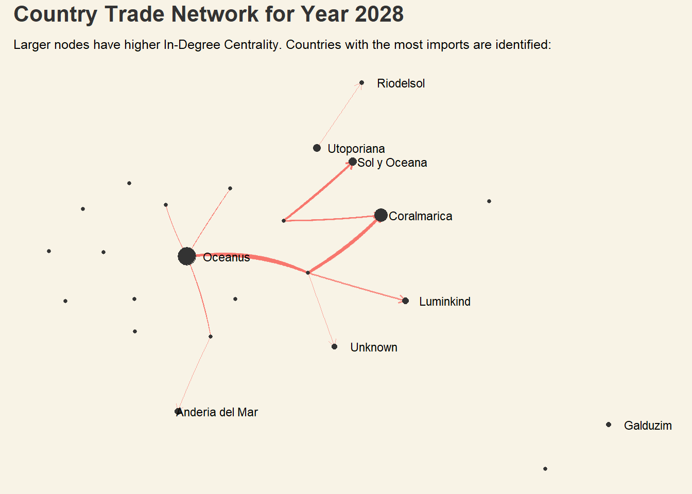

The country of Oceanus has sought FishEye International’s help in identifying companies possibly engaged in illegal, unreported, and unregulated (IUU) fishing. Using import/export trade data, FishEye’s analysts hope to understand business relationships, including finding links that will help them stop fishy IUU activities and protect marine species that are affected by it.
FishEye knows from past experience that companies caught fishing illegally will often shut down then start up again under a different name. Visualising these temporal patterns could thus help in comparing the activities of companies over time to determine if the companies have returned to their nefarious acts.
Project Objectives
This study thus aims to visualise temporal patterns for individual entities and between entities from trade records, and categorize the types of business relationship patterns found through analysis, paying particular attention to abnormalities in to detect fishy trade activities.
Notes:
- volumeteu:TEU (Twenty-foot Equivalent Unit) is a unit of measurement of shipping volume, used to determine cargo capacity for container ships and terminals.
- hscode:(Harmonized System Codes) is a standardized numerical method of identifying traded products.
1.1: Splitting data into nodes and edges
mc2_nodes <-as_tibble(mc2$nodes) %>%# reorder dataframe columnsselect(id, rcvcountry, shpcountry) %>%arrange(id)mc2_links <-as_tibble(mc2$links) %>%# Extract year from date and save as factor columnmutate(year =as_factor(year(arrivaldate))) %>%# Move Source and Target to the frontselect(source, target, hscode, year, arrivaldate, weightkg, volumeteu, valueofgoods_omu, valueofgoodsusd)
1.2: Data Health
Diagnostic checks to survey the extent of “incompleteness” of the data
# Check for columns with missing valuescolSums(is.na(mc2_nodes))
id rcvcountry shpcountry
0 2909 22359
rcvcountry has 2909 missing values, and shpcountry has 22359 missing values. There are more incomplete records pertaining to origin of the trades. To facilitate analysis, all NA values are replaced by “Unknown”:
valueofgoods_omu has too many missing values and will unnecessarily skew aggregated values. While some missing values could be intentional non-reporting of value and thus indicate possible IUU, there are too many to be able to filter out based on this criteria alone. This column will be dropped for the analysis, while the relationship between weightkg, volumeteu and valueofgoodsusd will be looked into more closely to check for possible discrepencies.
II. Checking for Duplicates:
# Check for duplicated rowsmc2_links[duplicated(mc2_links),]
# A tibble: 155,291 × 9
source target hscode year arrivaldate weightkg volumeteu valueofgoods_omu
<chr> <chr> <chr> <fct> <chr> <int> <dbl> <dbl>
1 French C… Mar d… 851629 2028 2028-03-09 20 0 NA
2 French C… Mar d… 851629 2028 2028-06-02 110 0 NA
3 French C… -1992 852990 2028 2028-01-02 2830 0 NA
4 French C… -1992 852990 2028 2028-01-02 2830 0 NA
5 French C… -1992 852990 2028 2028-01-04 2805 0 NA
6 French C… -1992 852990 2028 2028-01-11 1895 0 NA
7 French C… -1992 852990 2028 2028-01-11 2790 0 NA
8 French C… -1992 852990 2028 2028-01-11 2790 0 NA
9 French C… -1992 852990 2028 2028-01-18 1895 0 NA
10 French C… -1992 852990 2028 2028-01-18 2790 0 NA
# ℹ 155,281 more rows
# ℹ 1 more variable: valueofgoodsusd <dbl>
There are 155,291 duplicated transactions. As these may be indicative of possible fishy activity, the duplicated rows are saved separately as mc2_links_dup.
# Save duplicated transactions in a separate tibblemc2_links_dup <- mc2_links[duplicated(mc2_links),]# Leave only unique transactions in original edges tibblemc2_links <-unique(mc2_links)
1.3: Filtering and Aggregating links Variables
hscode is an internationally used 6-digit system to classify traded goods, documented by International and Governmental bodies such as the World Customs Organisation and United States ITC These different articles/products are coded as subcategories under 99 chapters, with the first 2 digits identifying the chapter that the goods are classified in.
From the code output describing the distribution of hscode numbers above (1 - 99), it is not possible to assume that the first number of each 6-digit hscode represents the chapter number identifying type of traded good, as most official hscodes start with a ‘0’. Products of interest belong to Chapter 3: Fish and Crustaceans, Molluscs and other Aquatic Invertebrates, but it is unclear if hscodes beginning with ‘3’ belong to chapter 3 or chapter 30.
The transactions recorded in mc2_links are too granular for visualisation, spread across 7 years (2028-2034). The dataframe is grouped by source, target and year-month, to get the number of transactions per traderoute (source->target) per month each year.
code block
mc2_links_agg <- mc2_links %>%# Change date to ym formatmutate(yearmonth =floor_date(as_date(arrivaldate), "month")) %>%# group by traderoute and yearmonthgroup_by( source, target, year, yearmonth) %>%summarise(# count number of transactions per source-target traderoute per product type per monthweight =n(),# Calculate total weight of export per month per traderouteweightkg =sum(weightkg),# Calculate total volume in teu per month per traderoutevolumeteu =sum(volumeteu),# Calculate total value in usd per month per traderoutevalueusd =sum(valueofgoodsusd) ) %>%filter(# Filter to keep traderoutes with more than one transaction weight >1,# Filter to keep traderoutes between different companies only source != target) %>%arrange( year, yearmonth) %>%ungroup()
Summary StatisticsI. Trends in number of unique traderoutes (sourcetarget) by Year
code block
# Aggregating number of routes into new dataframeroutes_by_year <- mc2_links_agg %>%# Change month to charactermutate(yearmonth =format(yearmonth,"%b")) %>%# Group by year and month to count frequency of trade routesgroup_by(year, yearmonth) %>%summarise(nroutes =n(),avgkg =sum(weightkg)/nroutes) %>%# Sort by Year-montharrange(year, # Manually assign ordinal levels to month to retain orderfactor(yearmonth, levels =c("Jan", "Feb", "Mar", "Apr", "May", "Jun", "Jul", "Aug", "Sep", "Oct", "Nov", "Dec"))) %>%ungroup()# Create pivot table to get years as columns rby_pivot <- routes_by_year %>%# Remove avgkg column select(-avgkg) %>%pivot_wider(names_from = year,values_from = nroutes)# Manually set order of months in new pivot tablerby_pivot$yearmonth <-factor(rby_pivot$yearmonth, levels =c("Jan", "Feb", "Mar", "Apr", "May", "Jun", "Jul", "Aug", "Sep", "Oct", "Nov", "Dec"))# List columns (years) to use in plot rby_columns <-colnames(rby_pivot)# Setting default theme for all plotsset_urbn_defaults("print", base_family ="Lato")# Specify annotationnote1 <-list(xref ='paper',yref ='y',x =0.23,y =8800,xanchor ='left',yanchor ='middle',text ="Abnormal Increase in Mar 2030",font =list(size =12,# color-code annotation to match line colorcolor ='rgb(85,183,72)'),showarrow =FALSE)# Plot trend linesrby <-plot_ly( rby_pivot, x =~yearmonth ) %>%# Add Trendlines by Yearadd_trace(y =~rby_pivot[[rby_columns[2]]],type ='scatter', mode ='lines+markers', name ="2028" ) %>%add_trace(y =~rby_pivot[[rby_columns[3]]],type ='scatter', mode ='lines+markers', name ="2029" ) %>%add_trace(y =~rby_pivot[[rby_columns[4]]],type ='scatter', mode ='lines+markers', name ="2030" ) %>%add_trace(y =~rby_pivot[[rby_columns[5]]],type ='scatter', mode ='lines+markers', name ="2031" ) %>%add_trace(y =~rby_pivot[[rby_columns[6]]],type ='scatter', mode ='lines+markers', name ="2032" ) %>%add_trace(y =~rby_pivot[[rby_columns[7]]],type ='scatter', mode ='lines+markers', name ="2033" ) %>%add_trace(y =~rby_pivot[[rby_columns[8]]],type ='scatter', mode ='lines+markers', name ="2034" ) %>%layout(title ="Increasing Trend in Traderoute Count in 2029 and 2033", yaxis =list(title ='Number of Traderoutes'),# Specify blank title to remove x-axis titlexaxis =list(title =""),# Add top margin to prevent title from being truncatedmargin =list(t =80),# Add annotation to plotannotations = note1,# Specify plot and background colorsplot_bgcolor ="#F8F3E6",paper_bgcolor ="#F8F3E6" ) rby
II. Trends in Average Weight (kg) of Exports by Year
code block
# Create pivot table to get years as columns kgby_pivot <- routes_by_year %>%# Remove nroutes column select(-nroutes) %>%pivot_wider(names_from = year,values_from = avgkg)# Manually set order of months in new pivot tablekgby_pivot$yearmonth <-factor(kgby_pivot$yearmonth, levels =c("Jan", "Feb", "Mar", "Apr", "May", "Jun", "Jul", "Aug", "Sep", "Oct", "Nov", "Dec"))# List columns (years) to use in plot kgby_columns <-colnames(kgby_pivot)# Plot trend lineskgby <-plot_ly( kgby_pivot, x =~yearmonth ) %>%# Add Trendlines by Yearadd_trace(y =~kgby_pivot[[kgby_columns[2]]],type ='scatter', mode ='lines', name ="2028" ) %>%add_trace(y =~kgby_pivot[[kgby_columns[3]]],type ='scatter', mode ='lines', name ="2029" ) %>%add_trace(y =~kgby_pivot[[kgby_columns[4]]],type ='scatter', mode ='lines', name ="2030" ) %>%add_trace(y =~kgby_pivot[[kgby_columns[5]]],type ='scatter', mode ='lines', name ="2031" ) %>%add_trace(y =~kgby_pivot[[kgby_columns[6]]],type ='scatter', mode ='lines', name ="2032" ) %>%add_trace(y =~kgby_pivot[[kgby_columns[7]]],type ='scatter', mode ='lines', name ="2033" ) %>%add_trace(y =~kgby_pivot[[kgby_columns[8]]],type ='scatter', mode ='lines', name ="2034" ) %>%layout(title ="Fluctuations in Average Trade Weights Across each Year", yaxis =list(title ='Average Weight of Trade (kg)'),# Specify blank title to remove x-axis titlexaxis =list(title =""),# Add top margin to prevent title from being truncatedmargin =list(t =80),# Specify plot and background colorsplot_bgcolor ="#F8F3E6",paper_bgcolor ="#F8F3E6" )kgby
Insights from LineChart:
Abnormal increase in traderoute count in Mar 2030
No regularly coinciding ‘peaks’ to suggest seasonal trends (through changes in export weight) across the years
To determine if there are specific companies or traderoutes accounting for a high percentage of these spikes in trade volume, it would be useful to visualise and compare tradecount and export weight of the highest contributors over the years. This is to investigate if the spikes are attributed to specific companies or traderoutes, or just an overall increase in numbers or trade volume across the board (pointing to increases in demand instead of fishy activity).
1.4: Classifying Companies based on trade records
Companies’ trade records are flagged as “suspicious” or “normal” based on the following logic:
Tradecount
Traded Product Weight(kg)
Trade Value ($usd)
Flag
High
-
0
suspicious
-
High
0
suspicious
Low
-
High
suspicious
# Aggregate values based on traderoute (source-target)mc2_links_class <- mc2_links_agg %>%group_by(source, target, year) %>%summarise(weight =sum(weight),weightkg =sum(weightkg),valueusd =sum(valueusd, na.rm =TRUE)) %>%ungroup()# Apply ifelse conditions to classify traderecordmc2_links_class$tradeRecord <-ifelse(# High tradecount, no recorded trade value mc2_links_class$weight >quantile(mc2_links_class$weight, .75) & mc2_links_class$valueusd ==0|# High traded product weight, no recorded trade value mc2_links_class$weightkg >quantile(mc2_links_class$weightkg, .75) & mc2_links_class$valueusd ==0|# High recorded trade value, low tradecount mc2_links_class$valueusd >quantile(mc2_links_class$valueusd, .75) & mc2_links_class$weight <quantile(mc2_links_class$weight, .25), "suspicious", "normal" )
code block
ggplot(mc2_links_class, aes(x = tradeRecord) ) +geom_bar() +labs(title ="Trade Record Classification: Suspicious Records make up ~10% of total",x =NULL,y =NULL ) +geom_text(stat ="count",aes(label =after_stat(count)),#Set count annotations above barvjust =-1 ) +theme(axis.line.y =element_blank(),plot.background =element_rect(fill="#F8F3E6",colour="#F8F3E6") )
2: ExploringFishy Data Patterns
From the Summary Statistics and preliminary visualisations in Section 1.4, traderoutes will be investigated based on abnormalities in temporal trends across number of trades and export weight. The analysis will focus on visualising networks based on filtered records:
%%{
init: {
'theme': 'base',
'themeVariables': {
'primaryColor': '#93c7c2',
'primaryTextColor': '#fff',
'primaryBorderColor': '#3d7670',
'lineColor': '#3d7670',
'secondaryColor': '#3d7670',
'tertiaryColor': '#fff'
}
}
}%%
flowchart LR
A{fa:fa-fish-fins \nOverall\nnetwork} ==> B((Country\nLevel))
A ==> C((Company\nLevel))
C -.- D{fa:fa-calendar-days \nTime} -->|patterns?| E(trade frequency)
B -.- D -->|patterns?| F(trade weight)
D -->|patterns?| G(trade value\n$usd)
2.1 Country Level Trade Networks
In order to get plot a network graph detailing links between countries, new links and nodes dataframes have to be created from existing data.
country_links <- mc2_links_agg %>%# Match source company to nodes to get shipping origin countryinner_join(mc2_nodes, by =join_by("source"=="id")) %>%# Use shpcountry as source, rcvcountry as target for linksselect(shpcountry, rcvcountry, year, yearmonth, weight, weightkg) %>%filter(shpcountry != rcvcountry)
2.1.1: Investigating 2030 data
From the summary statistics outlined in Section 1, there was an observed abnormal increase in tradecount in March 2030. Trade records from 2030 are thus filtered out for investigation:
# A tbl_graph: 137 nodes and 4439 edges
#
# A directed multigraph with 1 component
#
# A tibble: 137 × 1
country
<chr>
1 -22004
2 -22005
3 -22007
4 Alverossia
5 Alverovia
6 Andenovia
# ℹ 131 more rows
#
# A tibble: 4,439 × 5
from to yearmonth weight weightkg
<int> <int> <date> <int> <dbl>
1 1 75 2030-01-01 6 580805
2 1 75 2030-02-01 9 1732215
3 1 75 2030-03-01 2 252950
# ℹ 4,436 more rows
code block
# Measure directed out-degree centrality and save as a columnV(country_graph_2030)$out_degree <-degree(country_graph_2030, mode ="out")set.seed(1234)g2030 <- country_graph_2030 %>%activate(edges) %>%mutate(yearmonth =factor(format(yearmonth, "%b"),levels =c("Jan", "Feb", "Mar", "Apr", "May", "Jun", "Jul", "Aug", "Sep", "Oct", "Nov", "Dec"))) %>%ggraph(layout ="linear",circular =TRUE) +geom_edge_fan(aes(width = weight,color = yearmonth),alpha = .6,arrow =arrow(length =unit(2, 'mm')),show.legend =FALSE ) +scale_edge_width(range =c(0.1,4) ) +geom_node_point(aes(size = out_degree),color ="grey20",alpha = .7,show.legend =FALSE ) +geom_node_text(aes(label =ifelse(out_degree >quantile(out_degree, .75), country, "")), size =2,repel =TRUE ) +theme(plot.title =element_text(size =16,color ="grey20"),legend.title =element_text(),plot.background =element_rect(fill="#F8F3E6",colour="#F8F3E6"),plot.margin =margin(r =10,l =10) ) +transition_states(yearmonth,transition_length =6,state_length =4 ) +labs(title ="Country-level Trade Network in {closest_state} 2030",subtitle ="Larger nodes have higher Out-Degree Centrality. Countries with the most export routes are identified: " ) +enter_fade() +exit_fade()g2030
Insights from Network Graph:
There are no visually fishy patterns identified in March 2030, compared to the other months. The links with thicker widths represent higher number of traderoutes – these have largely remained the same throughout the year. This suggests that the abnormal increase could be detected at a company-level instead of a country-level network analysis. However, more information is first gathered from country-level traderoute activities to sieve out possible flags for IUU activity.
2.1.2: Visualising Records Across the Years
Which countries have the heaviest trade activities? Plotting an overall network graph would result in a dense web of links with little analytical value. To detect fishy temporal patterns, countries that have higher traderoute counts are used for the network analysis.
II. In-degree centrality (Visualising top Imports)
code block
# Measure directed out-degree centrality and save as a columnV(country_graph)$in_degree <-degree(country_graph, mode ="in")set.seed(1234)g_in <- country_graph %>%ggraph(layout ="kk" )+geom_edge_fan(aes(width = weight,color = year),alpha = .6,arrow =arrow(length =unit(2, 'mm')),show.legend =FALSE ) +scale_edge_width(range =c(0.1,4) ) +geom_node_point(aes(size = in_degree),color ="grey20",show.legend =FALSE ) +geom_node_text(aes(label =ifelse(in_degree >quantile(in_degree, .5), country, "")), size =3,nudge_x = .4 ) +theme(plot.title =element_text(size =16,color ="grey20"),legend.title =element_text(),plot.background =element_rect(fill="#F8F3E6",colour="#F8F3E6"),plot.margin =margin(r =10,l =10) ) +transition_states(year,transition_length =3,state_length =4 ) +labs(title ="Country Trade Network for Year {closest_state}",subtitle ="Larger nodes have higher In-Degree Centrality. Countries with the most imports are identified:" ) +enter_fade() +exit_fade()g_in

III. Betweenness Centrality
code block
# Calculate betweenness centrality and save values to new columncountry_graph <- country_graph %>%mutate(betweenness =centrality_betweenness())set.seed(1234)g_bc <- country_graph %>%ggraph(layout ="kk") +geom_edge_fan(aes(width = weight,color = year),alpha = .6,arrow =arrow(length =unit(2, 'mm')),show.legend =FALSE ) +scale_edge_width(range =c(0.1,4) ) +geom_node_point(aes(size = betweenness),color ="grey20" ) +geom_node_text(aes(label =ifelse(betweenness >quantile(betweenness, .5), country, "")), size =3,nudge_y = .3 ) +theme(plot.title =element_text(size =16,color ="grey20"),legend.position ="bottom",legend.title =element_text(),plot.background =element_rect(fill="#F8F3E6",colour="#F8F3E6"),plot.margin =margin(r =10,l =10) ) +transition_states(yearmonth,transition_length =5,state_length =5 ) +labs(title ="Country Trade Network for Year {closest_state}",subtitle ="Utoporiana has the highest Betweenness Centrality,\npossibly acting as intermediary facilitating traderoutes " ) +enter_fade() +exit_fade()g_bc
IV. Eigenvector Centrality
code block
# Calculate eigenvector centrality and save values to new columnec <-eigen_centrality(country_graph)$vectorV(country_graph)$eigencentrality <- ecset.seed(1234)g_ec <- country_graph %>%ggraph(layout ="kk") +geom_edge_fan(aes(width = weight,color = year),alpha = .6,arrow =arrow(length =unit(2, 'mm')),show.legend =FALSE ) +scale_edge_width(range =c(0.1,4) ) +geom_node_point(aes(size = eigencentrality),color ="grey30" ) +geom_node_text(aes(label =ifelse(eigencentrality >quantile(eigencentrality, .5), country, "")), size =3,nudge_y =-.2 ) +theme(plot.title =element_text(size =16,color ="grey20"),legend.position ="bottom",legend.title =element_text(),plot.background =element_rect(fill="#F8F3E6",colour="#F8F3E6"),plot.margin =margin(r =10,l =10) ) +transition_states(yearmonth,transition_length =5,state_length =5 ) +labs(title ="Country Trade Network for Year {closest_state}",subtitle ="Oceanus, Marebak and Coralmarica have higher Eigenvector Centrality, \nsuggesting high influence within the overall network" ) +enter_fade() +exit_fade()g_ec
V. PageRank Score
code block
# Calculate PageRank Score and save values to new columnpr <-page_rank(country_graph)$vectorV(country_graph)$pagerank <- prset.seed(1234)g_pr <- country_graph %>%ggraph(layout ="linear",circular =TRUE) +geom_edge_arc(aes(width = weight,color = year),alpha = .5,arrow =arrow(length =unit(2, 'mm')),show.legend =FALSE ) +scale_edge_width(range =c(0.1,4) ) +geom_node_point(aes(size = pagerank),color ="grey30" ) +geom_node_text(aes(label = country), size =3,nudge_y =-.06 ) +theme(plot.title =element_text(size =16,color ="grey20"),legend.title =element_text(),legend.position ="bottom",plot.background =element_rect(fill="#F8F3E6",colour="#F8F3E6"),plot.margin =margin(r =10,l =10) ) +transition_states(year,transition_length =5,state_length =5 ) +labs(title ="Country Trade Network for {closest_state}",subtitle ="Oceanus and Utoporiana have highest connectedness to other countries, possibly acting as trade hubs" ) +enter_fade() +exit_fade()g_pr
2.1.2: Comparing Distribution of Centrality Measures
Data Preparation:
code block
# Retrieve Centrality measures from nodescountry_centrality <-data.frame(OutDegree =V(country_graph)$out_degree,InDegree =V(country_graph)$in_degree,Betweenness_centrality =V(country_graph)$betweenness,Eigenvector_centrality =V(country_graph)$eigencentrality,PageRank_score =V(country_graph)$pagerank)# Create function to transform variables to same scale (min-max normalisation)transform_variable <-function(x) { (x -min(x)) / (max(x) -min(x))}# function to apply scaling across all variables in a dataframetransform_dataframe <-function(df) { df %>%mutate(across(where(is.numeric) &!matches("uuid"), transform_variable))}# Apply function and save to new dataframecountry_centrality_scaled <-transform_dataframe(country_centrality)# Pivot longer to get centrality measures as factorscountry_centrality_long <-gather(country_centrality_scaled, key ="CentralityMeasure", value ="CentralityScore")
code block
# Density ridges to show distribution of dataggplot( country_centrality_long, aes(x = CentralityScore, y = CentralityMeasure, fill = CentralityMeasure,color = CentralityMeasure) ) +geom_density_ridges(alpha = .6,scale =3 ) +geom_rug() +labs(title ="Similar Distribution of Values Across Centrality Measures",subtitle ="Right-skewed distribution with presence of outliers",x ="Centrality Score",y ="Centrality Measure" ) +theme(legend.position ="none",axis.title =element_blank(),panel.grid.major =element_blank(),plot.background =element_rect(fill="#F8F3E6",colour="#F8F3E6") )
Insights from Network Graphs: The differences in scores across centrality measures for each country suggests that there are various clusters of networks within the larger trade network, consisting of key Importers, Exporters, Intermediaries/Facilitators and Trade Hubs. Marebak, for instance, has a higher Out-Degree and Eigenvector Centrality value, but lower scores on other measures – this suggests that the country is a net exporter, and may have strong ties to important trading countries.
2.2 Company Level Trade Networks:fishyCountries and Traderoutes
Network analysis at a company level requires extra filters, to narrow down the scope of the graphs: - Retain companies from countries with high centrality values (key players in the network) - Retain companies that have been flagged as ‘suspicious’ from traderoute data
%%{
init: {
'theme': 'base',
'themeVariables': {
'primaryColor': '#93c7c2',
'primaryTextColor': '#fff',
'primaryBorderColor': '#3d7670',
'lineColor': '#3d7670',
'secondaryColor': '#3d7670',
'tertiaryColor': '#fff'
}
}
}%%
flowchart LR
A{fa:fa-fish-fins \nOverall\nnetwork} ==> B((Country\nLevel))
A ==> C((Company\nLevel))
B -.->|filter| C
C -.- D{fa:fa-calendar-days \nTime} -->|patterns?| E(trade frequency)
B -.- D -->|patterns?| F(trade weight)
D -->|patterns?| G(trade value\n$usd)
# Extract centrality metrics from country graph and save into new data framecountry_filter <-data.frame(country =V(country_graph)$country,OutDegree =V(country_graph)$out_degree,InDegree =V(country_graph)$in_degree,Betweenness_centrality =V(country_graph)$betweenness,Eigenvector_centrality =V(country_graph)$eigencentrality,PageRank_score =V(country_graph)$pagerank)# Define function to filter each variable by percentilepercentile_filter <-function(x) { x >=quantile(x, .75)}# Filter the dataframe to retrieve list of countries country_filter <- country_filter %>%filter(percentile_filter(OutDegree) |percentile_filter(InDegree) |percentile_filter(Betweenness_centrality) |percentile_filter(Eigenvector_centrality) |percentile_filter(PageRank_score) )
routes_by_count <- mc2_links_class %>%# Ensure that companies in the dataframe are from top trading countries, or flagged as suspiciousfilter( source %in% mc2_nodes_filtered$id | target %in% mc2_nodes_filtered$id | tradeRecord =="suspicious" ) %>%group_by(source, target) %>%filter(source != target) %>%# Get total tradecount of traderoutesummarise(count =sum(weight)) %>%# Arrange in descending order to get top routes firstarrange(desc(count)) %>%ungroup()datatable(head(routes_by_count,10))
Insights from Table:
There seems to be many common source and target companies appearing across various traderoutes. This suggests that IUU fishing activity could be detected through visualising this information as a network and using centrality measures to determine key players. Since companies caught fishing illegally shut down but often start up again under a different company, identifying fishy companies by comparing their trading partners over the years could help determine if they are engaging in illegal acts.
# Calculate median, percentile and num distinct source and target to use as annotationsmedsource <-median(source_count$sourcecount)qsource <-quantile(source_count$sourcecount, probs = .95)distinctsource <-n_distinct(routes_by_count$source)medtarget <-median(target_count$targetcount)qtarget <-quantile(target_count$targetcount, probs = .95)distincttarget <-n_distinct(routes_by_count$target)# Plot source raincloud plotsource <-ggplot(source_count, aes(1, y = sourcecount) ) +geom_rain(alpha = .7,boxplot.args =list(color ="grey20",fill ="salmon",outlier.shape =NA),violin.args =list(alpha = .6,fill ="salmon") ) +scale_y_continuous(limits =c(0, 1500),breaks = scales::pretty_breaks(n =5) ) +# Add annotation for median and 95th percentile valueannotate(geom ="text",x =1.3,y =500,label =paste0("Median count: ", medsource, " | ","95th Percentile count: ", qsource, " | ","No. distinct:", distinctsource) ) +labs(title ="I. Distribution of traderoute counts per Source Company" ) +theme(axis.title.y =element_blank(),axis.title.x =element_blank(),axis.text.y =element_blank(),axis.ticks.y =element_blank(),plot.background =element_rect(fill="#F8F3E6",colour="#F8F3E6") ) +# Flip orientation to get horizontal plotscoord_flip() # Plot Target raincloud plottarget <-ggplot(target_count, aes(1, y = targetcount) ) +geom_rain(alpha = .7,boxplot.args =list(color ="grey20",fill ="#1696d2",outlier.shape =NA),violin.args =list(alpha = .6,fill ="#1696d2") ) +scale_y_continuous(limits =c(0, 1500),breaks = scales::pretty_breaks(n =5) ) +annotate(geom ="text",x =1.3,y =500,label =paste0("Median count: ", medtarget, " | ","95th Percentile count: ", qtarget, " | ","No. distinct:", distincttarget) ) +annotate(geom ="text",x =0.9,y =1200,label ="Presence of many Outliers with high traderoute counts" ) +labs(title ="II. Distribution of traderoute counts per Target Company" ) +theme(axis.title.y =element_blank(),axis.title.x =element_blank(),axis.text.y =element_blank(),axis.ticks.y =element_blank(),plot.background =element_rect(fill="#F8F3E6",colour="#F8F3E6") ) +coord_flip() countpatch <- (source / target) +plot_annotation(title ="Highly Right-skewed Distributions of Traderoute Counts",theme =theme(plot.title =element_text(size =16)))countpatch &theme(plot.background =element_rect(fill="#F8F3E6",colour="#F8F3E6"))
Insights from Distribution of traderoute counts:
The density raincloud plots of traderoute counts reveal the presence of outliers with values far above the median and 95th percentile value. This suggets that abnormal fishing activity could be investigated by filtering out traderoutes with very high frequency. Investigating by using countries as filters, as well as companies beyond the top 95th percentile of traderoutes could thus give some insight into IUU fishing networks.
2.3: Who are the Top players in the Network by Tradecount?
links_sorted <- mc2_links_class %>%# Only keep companies in suspicious countries or with suspicious trade recordsfilter( source %in% mc2_nodes_filtered$id | target %in% mc2_nodes_filtered$id | tradeRecord =="suspicious") %>%# Group and calculate total number of tradecounts per yeargroup_by(source, target, year) %>%summarise(weight =sum(weight)) %>%filter(source != target) %>%# Arrange data in order of year and descending order of tradecounts to get toparrange(year, desc(weight)) %>%ungroup()# Filter out top 30 per yeartop_30 <- links_sorted %>%group_by(year) %>%# Get top 30 companies by weighttop_n(30, weight) %>%ungroup()
# Create nodes dataframe for top 10 exporters from oceanusttdistinct_source <- top_30 %>%distinct(source)ttdistinct_target <- top_30 %>%distinct(target)# Select only overlapping nodes and distinct companies from linksttnodes_source <-inner_join( ttdistinct_source, mc2_nodes,by =c("source"="id")) %>%mutate(id = source)ttnodes_target <-inner_join( ttdistinct_target, mc2_nodes,by =c("target"="id")) %>%mutate(id = target)# Create new nodes data by combining filtered dataframestop_30_nodes <-bind_rows(ttnodes_source, ttnodes_target) %>%select(id, uuid, shpcountry, rcvcountry) %>%distinct()
In the plot above, the relative sizes of the nodes are based on Out-degree centrality, where larger nodes have a higher number of out-going links. This enables us to visually determine companies with higher number of exporting links over time. Subsequent plots using In-degree centrality and betweenness centrality instead are shown below:
# Apply function to normalize values in dataframetop30_centrality_scaled <- top30_centrality %>%select(OutDegree, InDegree, Betweenness_centrality, Eigenvector_centrality, PageRank_score)top30_centrality_scaled <-transform_dataframe(top30_centrality_scaled)
code block
# Density ridges to show distribution of datainout_centrality <- top30_centrality_scaled %>%select(InDegree, OutDegree)inout_centrality_long <-gather(inout_centrality, key ="CentralityMeasure", value ="CentralityScore")ridge1 <-ggplot(inout_centrality_long,aes(x = CentralityMeasure,y = CentralityScore, fill = CentralityMeasure,color = CentralityMeasure) ) +geom_rain(alpha = .6 ) +annotate(geom ="text",x =1.5,y = .5,label ="Presence of smaller peaks in distibution suggestive of outliers" ) +scale_fill_manual(values =c("#98cf90","salmon") ) +scale_color_manual(values =c("#98cf90","salmon") ) +labs(title ="I. Right-skewed Distributions of In and Out Degree Centrality",x ="Centrality Score",y ="Centrality Measure" ) +theme(legend.position ="none",axis.title =element_blank(),panel.grid.major =element_blank(),plot.background =element_rect(fill="#F8F3E6",colour="#F8F3E6") ) +coord_flip()bep_centrality <- top30_centrality_scaled %>%select(Betweenness_centrality, Eigenvector_centrality, PageRank_score)bep_centrality_long <-gather(bep_centrality, key ="CentralityMeasure", value ="CentralityScore")ridge2 <-ggplot( bep_centrality_long,aes(x= CentralityMeasure,y = CentralityScore,fill = CentralityMeasure,color = CentralityMeasure) ) +geom_rain(alpha = .6 ) +labs(title ="II. Highly skewed Distributions Indicate Potential Key Network Players",x ="Centrality Score",y ="Centrality Measure" ) +theme(legend.position ="none",axis.title =element_blank(),panel.grid.major =element_blank(),plot.background =element_rect(fill="#F8F3E6",colour="#F8F3E6") ) +coord_flip()ridgepatch <- ridge1 / ridge2ridgepatch &theme(plot.background =element_rect(fill="#F8F3E6",colour="#F8F3E6"))
Insights from Network Graphs and Centrality Measure Distributions:
From the network graphs, we can see that key nodes are unchanged for the entire time period (2028-2034), but heavier traderoutes (identified by thicker links) seem to vary from key nodes through the years. This could be indicative of IUU activity, with fishy trading partners. The distribution graphs show intensely skewed distributions of centrality measures. This enables us to classify companies based on their relative centrality in the network.
Comparing the distribution of centrality measures, there are significantly more nodes with higher in/out degree but lower betweenness centrality. This suggests that there are clusters of nodes in the network, and that these nodes are well-connected within their clusters but not to the rest of the nodes in other clusters. This could be indicative of various smaller IUU networks operating within the overall network.
3: Categorizing fishy companies
The network analysis metrics in section 2 are used to derive attributes of each fishy company, classifying them according to the following logic:
Centrality Measure / Node Category
In Degree
Out Degree
Betweenness Centrality
Eigenvector Centrality
PageRank Score
Central Broker
-
-
High
High
High
Key Importer
High
Low
-
-
High
Key Exporter
Low
High
High
-
-
Cluster Broker
High
-
Low
Low
-
NetImporter
High
Low
Low
Low
Low
NetExporter
Low
High
Low
Low
Low
3.1: Net Exporters or Importers?
Since net Degree Centrality has been established as the sum of In and Out Degree for each node in Section 2.3.1, the same logic will be applied to companies to classify them as Net Importers (higher In-degree) or Net Exporters (higher Out-degree):
Labels are assigned to the companies Centrality Measures, based on the distribution of values as visualised in Section 2.3.1. These are stored under a new column variable, ‘group’, which will be used in the plotting of a visNetwork graph:
# Combine edges and nodes to a graph dataframevis_links <- top_30 %>%rename(# visNetwork edges need to be renamed in order to parse through as directed links"from"="source", "to"="target") %>%select(from, to, year, weight)# Renaming company name variable to 'id' for use as a filter in the network graphvis_nodes <- top30_centrality %>%rename("id"="company")
code block
visNetwork( vis_nodes, vis_links,height ="500px", width ="100%" ) %>%visIgraphLayout(layout ="layout_with_kk" ) %>%visGroups(# Add icon to key Player to identify it in the graphgroupname ="centralBroker", shape ="icon", # Make icon larger and of a darker color so that it stands outicon =list(code ="f714", size =75, color ="grey20") ) %>%addFontAwesome() %>%# Color nodes by groupvisLegend() %>%visEdges(value ="weight",arrows ="to" ) %>%visOptions(# Specify additional Interactive ElementshighlightNearest =list(enabled = T, degree =2, hover = T),# Add drop-down menu to filter by company namenodesIdSelection =TRUE,# Add drop-down menu to filter by categoryselectedBy ="group",collapse =TRUE)
4: Limitations of the Investigation
While the network graphs provide some insight into fishy trading patterns, the analysis is limited by scale and complexity, arising from missing data as well as computational limitations. Some assumptions and constraints to be considered:
Filtering the nodes gives a broader overview by stipulated thresholds of suspicion, which shed some insight into the larger or key figures in the network; however, clusters may not be clearly defined in these simpler network graphs.
Assumptions of centrality measures used in this analysis are that edges and nodes are assigned equal importance. Further study is needed to interpret these measures and assign ‘weights’ to them in order to determine the true influence of the key players in the network.
Hidden Relationships from unobserved or unrecorded data may not be captured in the analysis. For the purpose of this analysis, missing and incomplete data sources were assumed to be intentional, but may instead be due to lapses in administrative functions. This would also affect the accuracy and completeness of results.